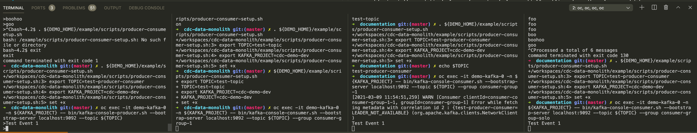

Demo Walkthrough
Kafka: Producers, Consumers, and Groups
In this demo we want to show the notion of producers and consumers and ideally topics without any of the k8 (Strimzi) overlays
|
Make sure your terminals are setup per the instructions here before executing the steps below |
-
Make sure you can see 4 terminals on your desktop
-
see the suggested layout here
-
-
Enter the following commands in each of the terminals:
Terminal one is for producing information on a topic. Run the following command to get started
oc exec -it demo-kafka-0 -n cdc-demo-dev -- bin/kafka-console-producer.sh --bootstrap-server localhost:9092 --topic test-producer-consumerThe terminal is ready to take input on the topic when you see the chevron ( >)Terminal 2 will be our first consumer in the group
consumer-group-1Run the following command to get it started:
oc exec -it demo-kafka-0 -n cdc-demo-dev -- bin/kafka-console-consumer.sh --bootstrap-server localhost:9092 --topic test-producer-consumer --group consumer-group-1Terminal 3 will be our second consumer in the group
consumer-group-1Run the following command to get it started:
oc exec -it demo-kafka-0 -n cdc-demo-dev -- bin/kafka-console-consumer.sh --bootstrap-server localhost:9092 --topic test-producer-consumer --group consumer-group-1Terminal 4 will be our first consumer in the group
consumer-group-soloRun the following command to get it started:
oc exec -it demo-kafka-0 -n cdc-demo-dev -- bin/kafka-console-consumer.sh --bootstrap-server localhost:9092 --topic test-producer-consumer --group consumer-group-solo -
Enter the following
-
You should notice output in one of Terminal 2 or 3 and Terminal 4
 -
Enter the following
-
You should notice output in the same of Terminal 2 and 3 that received the event before and Terminal 4
-
Next kill the consumer in either Terminal 2 or 3, whichever one got the previous two events, with ctrl+c
-
Enter the following
-
This time the other terminal of
consumer-group-1should get the message as should Terminal 4 -
Now kill the consumer in Terminal 4 with ctrl+c
-
Enter the following:
-
You should only see the event appear in the remaining connected terminal
-
Finally, let’s see how the consumer groups have gone. Let’s use the
kafka-consumer-groupscommand to see:oc exec -it demo-kafka-0 -n cdc-demo-dev -- bash -c "printf '\033[?7l'; bin/kafka-consumer-groups.sh --bootstrap-server localhost:9092 --describe --group consumer-group-1; echo '-------------------------'; bin/kafka-consumer-groups.sh --bootstrap-server localhost:9092 --describe --group consumer-group-solo; printf '\033[?7h'" -
Output should be similar to (notice the truncation due to the
printfabove):GROUP TOPIC PARTITION CURRENT-OFFSET LOG-END-OFFSET LAG CONSUMER-ID consumer-group-1 test-producer-consumer 0 4 4 0 consumer-consumer-group-1-1-f888bb4c-46dd-4723- ------------------------- Consumer group 'consumer-group-solo' has no active members. GROUP TOPIC PARTITION CURRENT-OFFSET LOG-END-OFFSET LAG CONSUMER-ID HOST CLIENT-ID consumer-group-solo test-producer-consumer 0 3 4 1 - - - -
Next, let’s reset the offset of the only consumer group that is currently offline (has no active members)
-
Finally, let’s restart a consumer of the
consumer-group-solo -
After a few seconds you should see the following output
-
Which shows that our offset has been reset to the start causing us to reread the events